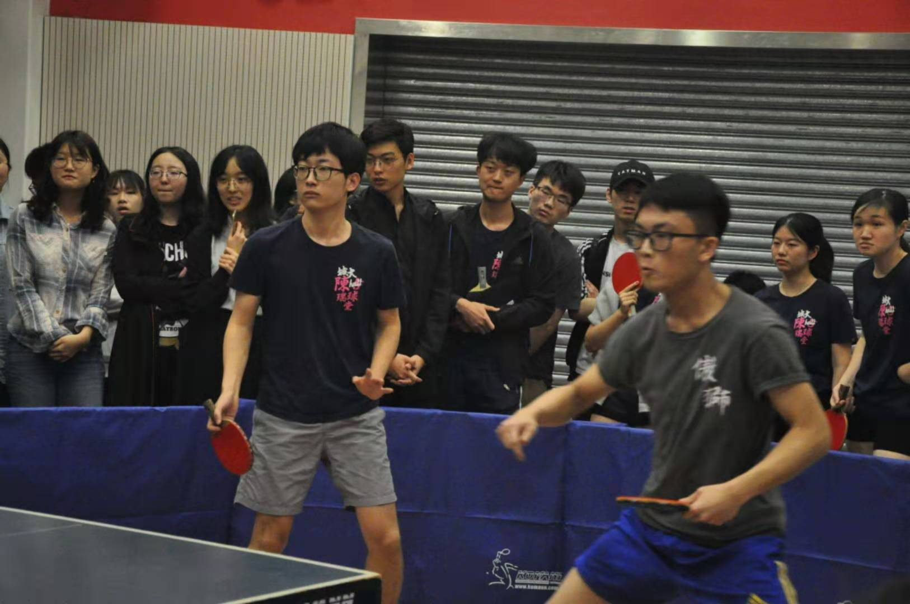

Here's WANG Zhao, Matthew.
If you happen to speak Chinese, my Chinese name is 王钊.
I am currently a quantitative developer at Amber Group, where I develop high-availability and low-latency trading systems with Python, JavaScript/TypeScript, and C.
Before joining Amber, I worked at Prudential as a full-stack SDE and met a lot of amazing people there.
I was born and raised in a small town in Inner Mongolia, a beautiful and unforgettable place set on an vast grassland plateau. After high school, I was fortunate to receive a life-changing full scholarship to study in Hong Kong, where I earned both my Bachelor's and Master's degrees. Other than Canada and Hong Kong, I've also had lived in Europe for a period of time, where I worked as a research intern at LIRMM in France, and participated in an exchange program in the Czech Republic.
Outside of programming, I enjoy Chinese calligraphy, traveling, hiking, and long-distance running (personal best: 10km in 44'02''). During my undergraduate years, I was also a member of my college's table tennis team.
